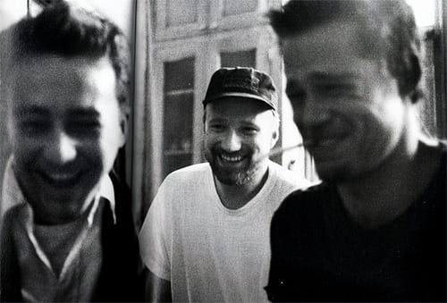

Birdy Nam Nam - Goin' In (Skrillex "Goin' Hard" Mix)
Энергично!
Энергично!

Приятный альбом)
Смирнов открыл тут мне глаза: показал, зачем нужна микроволновка. Он сделал в ней омлет! А я сегодня этот трюк повторил)
Рецепт: взять стакан (или кружку), разбить в него два яйца, хорошо их там взболтать, добавить децл молока, посолить и тп по вкусу (Леха добавлял еще кусочки белого хлеба, а я черного), щепотку сухого укропа, ну не знаю, что вы там любите?))
Все это перемешивается и прямо в стакане ставится в микроволновку. На средней мощности готовится минуты 3-4. Есть надо прямо из стакана/кружки)
Enjoy!
На память, а-то забуду. Отличный мульт!
Отличная подборка автопортретов известных фотографов.

Ой, какой кайфовый альбом! Вот, например, The Girl From Ipanema.

Эдвард Нортон, Дэвид Финчер, Брэд Питт.Там еще много интересных фото)

Очень приятная фоновая музыка. Все альбомы доступны для онлайн-прослушивания на сайте автора.
Отличный айдиэм!